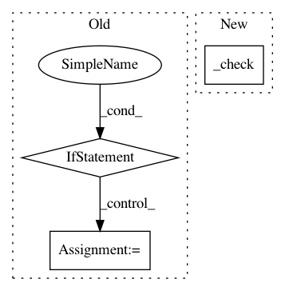

c988c51e02793d7453ae854cc285ef904c8a535d,tests/extensions_tests/detection_tests/test_detection_vis_report.py,TestDetectionVisReport,test_with_filename,#TestDetectionVisReport#,61
Before Change
filename="result_iter_{iteration}_no_{index}.png")
self.extension(self.trainer)
if not optional_modules:
return
for idx in six.moves.range(len(self.dataset)):
out_file = osp.join(
self.trainer.out, "result_iter_0_no_{:d}.png".format(idx))
self.assertTrue(osp.exists(out_file))
testing.run_module(__name__, __file__)
After Change
self.extension = DetectionVisReport(
self.iterator, self.link,
filename="result_no_{index}_iter_{iteration}.png")
self._check("result_no_{:d}_iter_0.png")
testing.run_module(__name__, __file__)
In pattern: SUPERPATTERN
Frequency: 3
Non-data size: 3
Instances
Project Name: chainer/chainercv
Commit Name: c988c51e02793d7453ae854cc285ef904c8a535d
Time: 2017-05-06
Author: Hakuyume@users.noreply.github.com
File Name: tests/extensions_tests/detection_tests/test_detection_vis_report.py
Class Name: TestDetectionVisReport
Method Name: test_with_filename
Project Name: keras-team/autokeras
Commit Name: e4a5dbe7e29d64c9b095d134f0ca2a5543353dda
Time: 2019-10-20
Author: jhfjhfj1@gmail.com
File Name: autokeras/hypermodel/node.py
Class Name: Input
Method Name: transform
Project Name: chainer/chainercv
Commit Name: 0fb981e6378afdf9b284f0d5dde8642df9856eb8
Time: 2017-05-03
Author: Hakuyume@users.noreply.github.com
File Name: tests/utils_tests/testing_tests/test_constant_stub_link.py
Class Name: TestConstantStubLink
Method Name: test_cpu